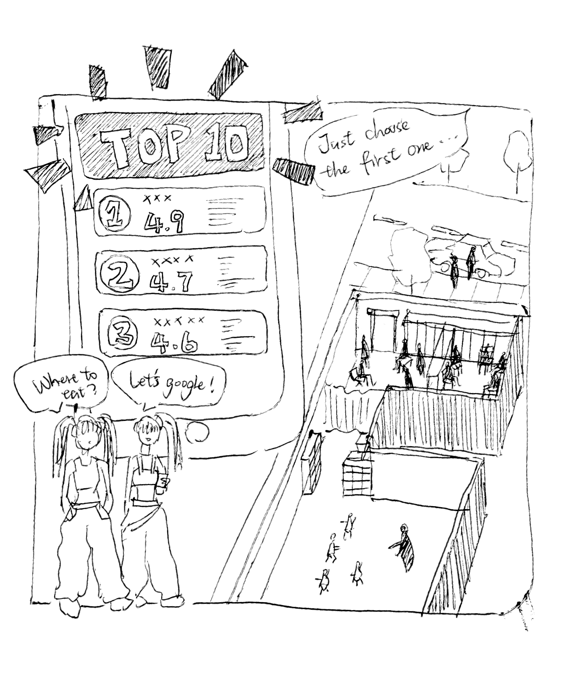
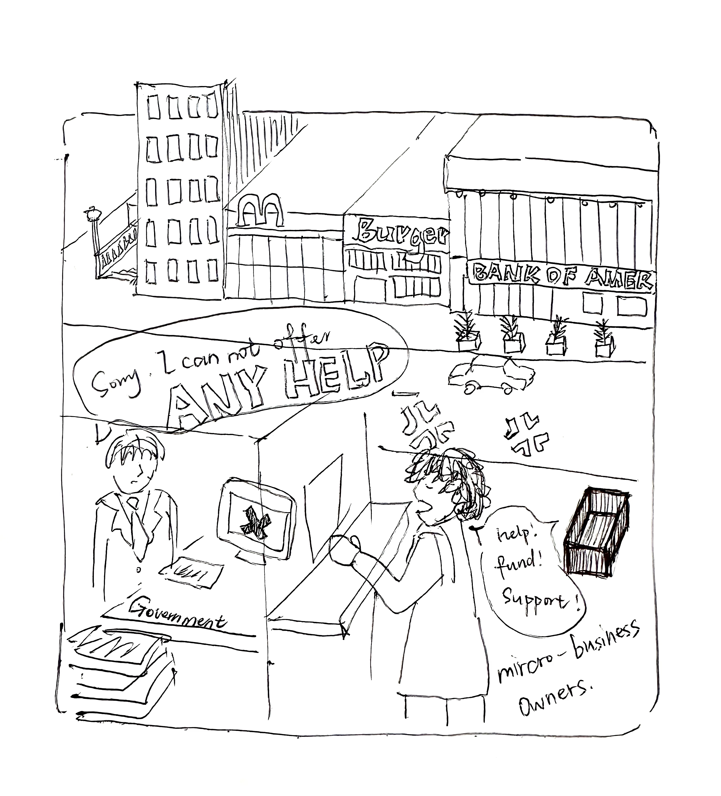
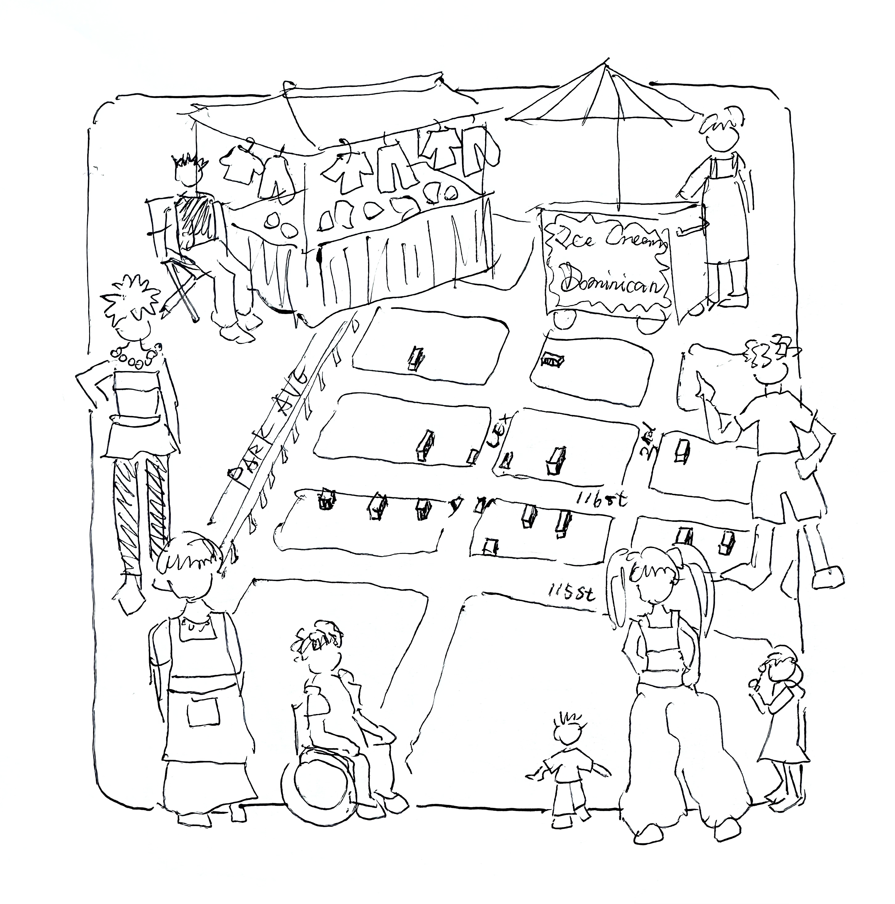
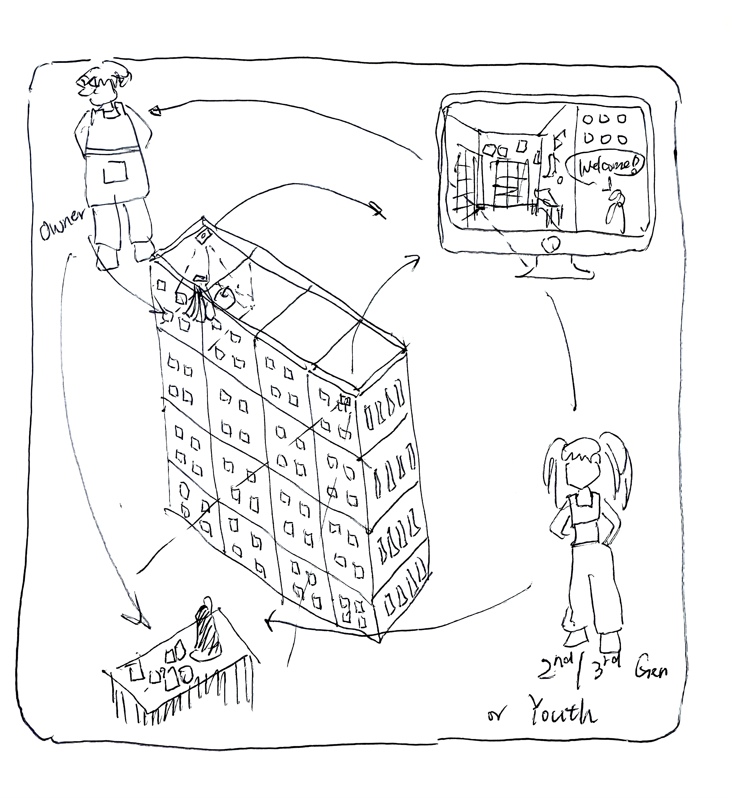

What’s Missing from the Map?
Google Maps shows us ratings, categories, and photos—but it misses the quiet lifelines of our communities.
Many small businesses in East Harlem don’t show up on Google. Not because they don’t matter, but because they operate through trust, not clicks.

The Acquaintance Economy
These micro-businesses—often immigrant-run—anchor everyday life: feeding neighbours, mentoring youth, and holding cultural space.
Yet few of them are reviewed, mapped, or seen in platform economies. Their power lies in being known, not rated.

Building Our Own Platform
We used KoboToolbox to document what Google missed. Residents helped record cultural goods, languages, and informal services they care about.
This map is a prototype—an evolving space that communities can grow, annotate, and update themselves.

Online-Offline Interactive System
Each store is a modular unit co-designed with its owner—allowing for DIY cultural expression.
Once assembled, the store’s appearance and products are instantly updated to the website, where residents can interact directly with store owners.
From browsing goods to checking activities or placing orders, the platform turns street presence into shared visibility and collective growth.
